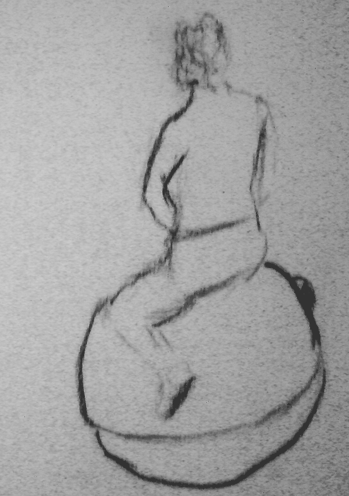
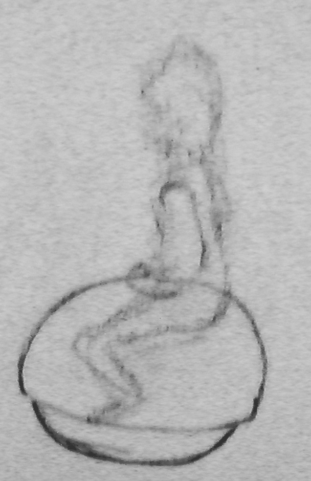
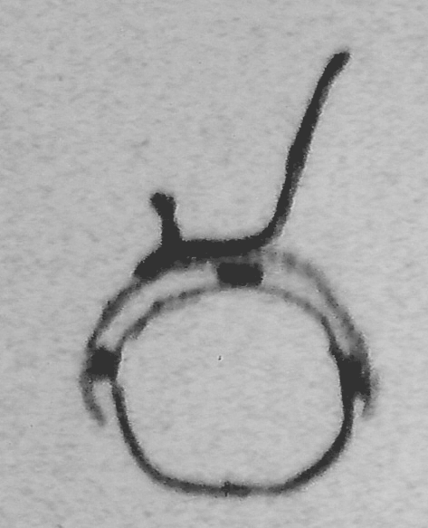

FAB Academy semester project proposals
I have plenty of design ideas. Because I can not yet make a choice and I do not have the overview of all we are going to cover with the FAB Academy I give a list of semester project proposals.
1. Ball vehicle
This object is a ball that can be used as a transportation means (or vehicle). Instead of using wheels, it has a single ball (much as a Skippy ball). The advantage of a ball over a wheel is that the ball can go in any direction any time. Besides use as a fun vehicle, I believe this object can be the next generation wheel chair for disabled people. Besides being able to manoeuvre better than a wheel chair on 2 wheels it will also have more modern of even futuristic look.
|
 |
 |
 |
|
|
|
|
The technical challenges are plenty:
Choice of materials for ball and mounted seat
control electronics for keeping the top mounted seat always vertical (much like a Segway)
control electronics for driving the ball in any direction
power storage and charging
The Ball is encapsulated by a shell that is mounted on top of it. It contains the driving motors, the electronics, the battery, a joystick/lever and optionally a chair.
2. Cushion “Feeling you, feeling me”
An inter active cushion that communicates over internet with another cushion. You can feel another person sitting against the cushion, and the other person feels you pushing back. You are virtually close to each other as you feel the presence of the someone you communicate with non-verbally.
The cushion will be equiped with sensors measure the impact on the cushion, and perhaps even measure the temperature. Actuators push back if someone on the other end of the communication line push their cushion. The cushion can connect stand alone with a wifi router and can be configured through a html based user friendly interface. A internet community can be created to link your cushion to other (anonymous or known) partners. Perhaps a community with famous persons or a dating site can be created. The cushion can be charged and configured through a USB interface.
The surface of the cushion is soft. Optionally equiped lights to signal activity and with a heat source to emulate the warmth of the communication partner.
The challenges of this project are:
Create a natural touch and feedback system inside the cushion as if another person is sitting to the other side of the cushion.
Implementing a smart sensor system
Implementing a smart actuator system
Creating a communication channel of internet
3. Computer controlled and laser adjusted mill cq. Laser cutter
Much like the Raprep this is a project to build a home made machine that can be used to fabricate just like a Fablab. The machine that is proposed here has additional sensors that accurately measure the x, y, and z positions of the head such that mechanical errors can be compensated for. The head can be equiped with many different tools. It is proposed to equip this model with a mill and and a laser tool.
Ideally the machine should have USB interface and can communicate in G- (EIA-274-D standard) and M-code. Perhaps even a different vector code can be invented.
The challenges of this project are:
mechanics that can drive the mill/laser head accurately but with a certain speed.
Control logic that should incorporate the sensor data to adjust for the precise positioning of the head.
Computer driver (software) development
4. “PaterNoster” storage system
This storage system is based on a “Paternoster” lift. A paternoster lift is a passenger elevator which consists of a chain of open compartments that move slowly in a loop up and down inside a building without stopping. Passengers can step on or off at any floor they like.
A storage system with a paternoster mechanism has the advantage of being able to have all your stored items in reach. You do not have to climb a stairs or a chair to reach for the highest shelf or compartment, you simply turn the system such that your desired shelf is at your reach. You can use the whole hight of your room to store items.
The storage system is to be constructed in wood or in plastic. The mechanics should be as simple as possible, and the challenge is to construct it from as little pieces as possible. Optionally, the system can be controlled by a electronic controlled motor.
The challenges of this project are:
Simple mechanics to move the shelves/compartments.
A robust rotation system
Milling of materials
Optionally, some electronic controls & interface
5. Moving light wall
This wall is a lamp that is interactive in the sense that the brightness and colour of the light is controlled by sensors that measure presence of humans. Possible sensors and activities that could be used in the light wall are:
temperature
proximity to the wall
sound volume
sound pitch
sound melody
touch
The wall will respond with movements, and by changing the colours and brightness of the different lamps in the wall.
In a later stage the wall can communicate with other walls through an internet connection. This way you can monitor presence of humans in another location.
The challenges of this project are:
Translate the sensor data in smart and intuitive way to actuator output
Design a mesh of lamps and movement actuators
Hi
All,
I was not able to make a choice, and have some many nice
ideas that I would like to realize... I made a list of 5 semester
project proposals. The final choice also depends on my insights on
how this course will evolve; How can I apply the new knowledge to the
max.
I am curious to see all the other proposals too!
Best
regards,
Michiel